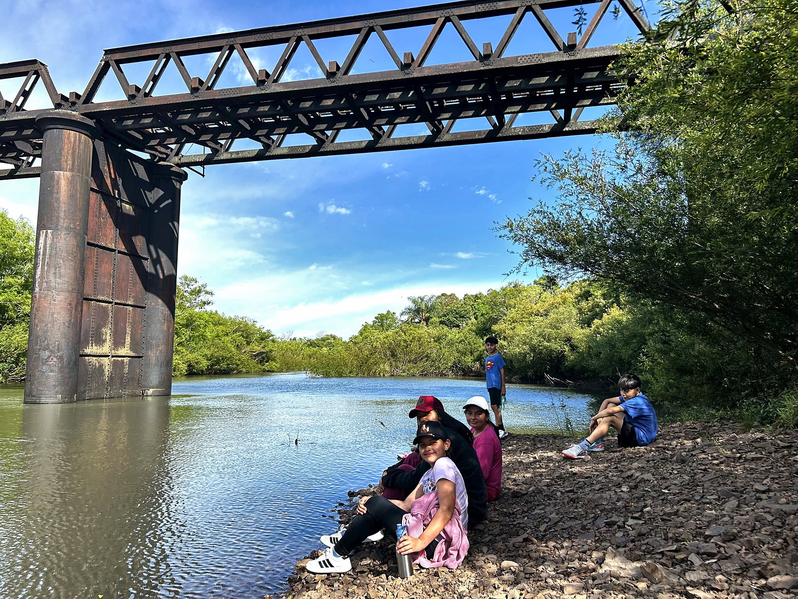
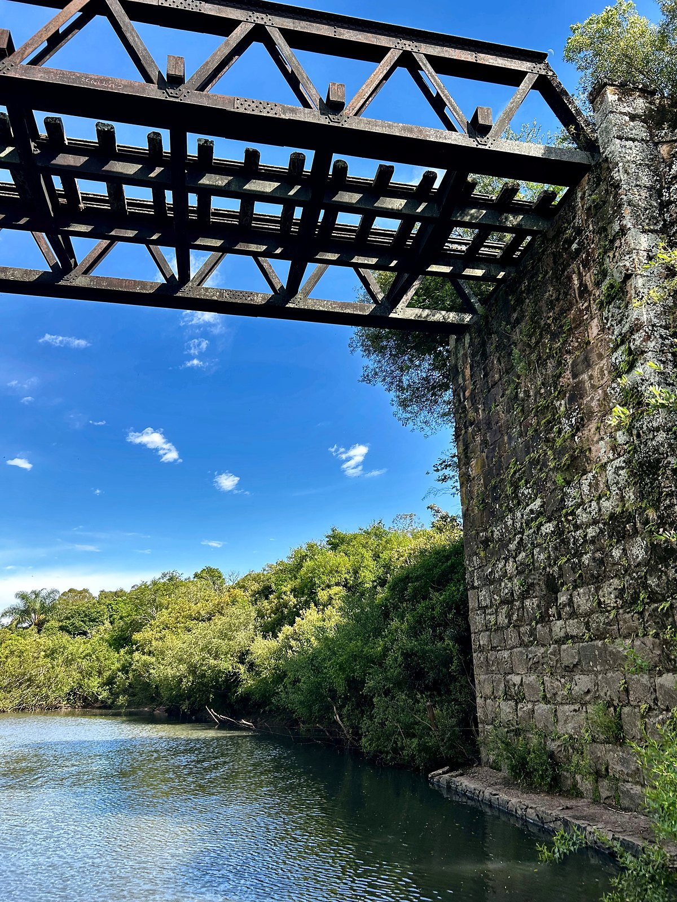
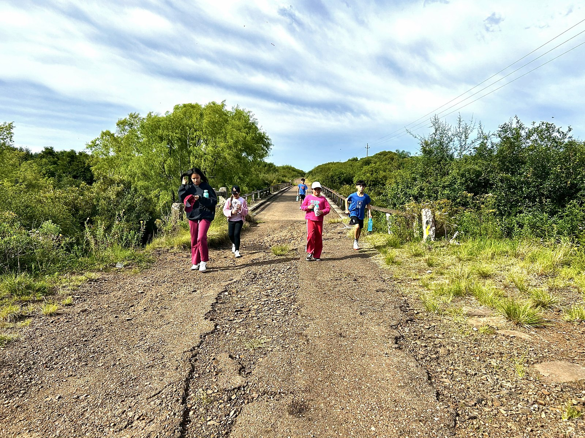
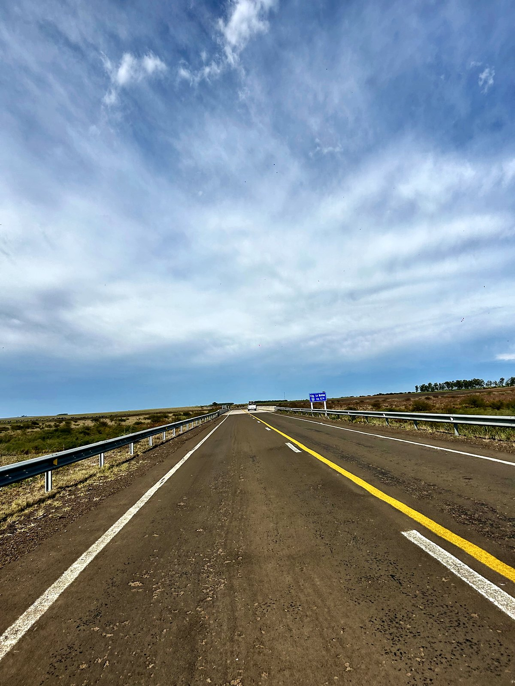

El puente viejo
El Puente Tres Cruces, el puente «viejo», como se lo conoce popularmente, está ubicado sobre el antiguo pasaje de la Ruta 30, en el arroyo Tres Cruces.
Muy cerca pasa hoy la Ruta 30 por un puente nuevo de 170 metros, que se inauguró en 2019 con las obras que corrigieron el trazado de la ruta cerca de Javier de Viana.
Un día en la naturaleza
La zona es conocida por su vegetación ribereña y sus aguas corrientes, ideales para disfrutar un día en la tranquilidad que da la naturaleza.
Videos

Fotos

Foto: CEI Javier de Viana

Foto: CEI Javier de Viana

Foto: CEI Javier de Viana

Foto: CEI Javier de Viana